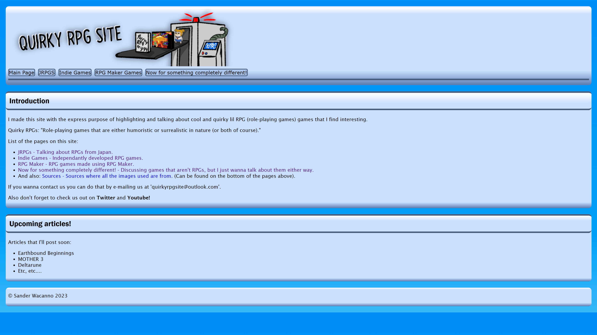
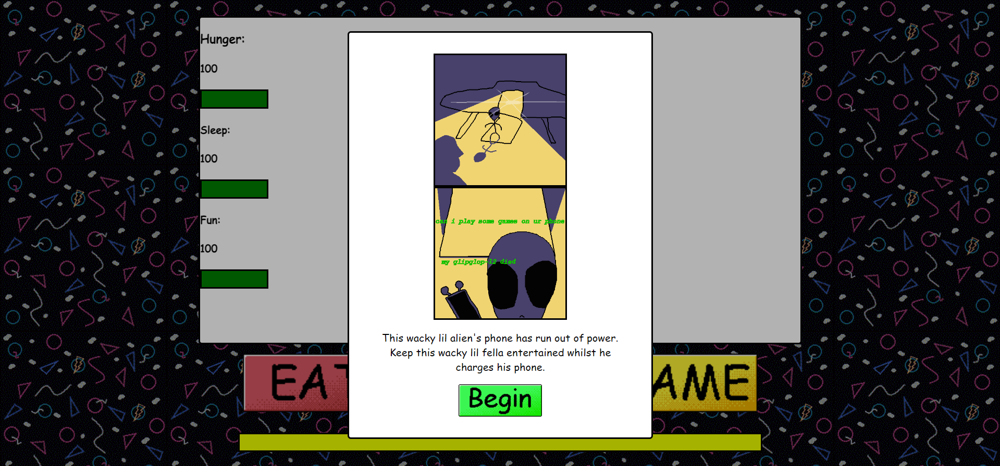
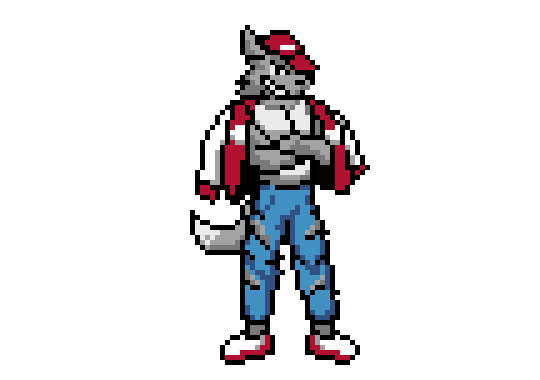
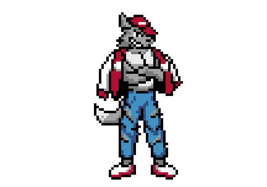
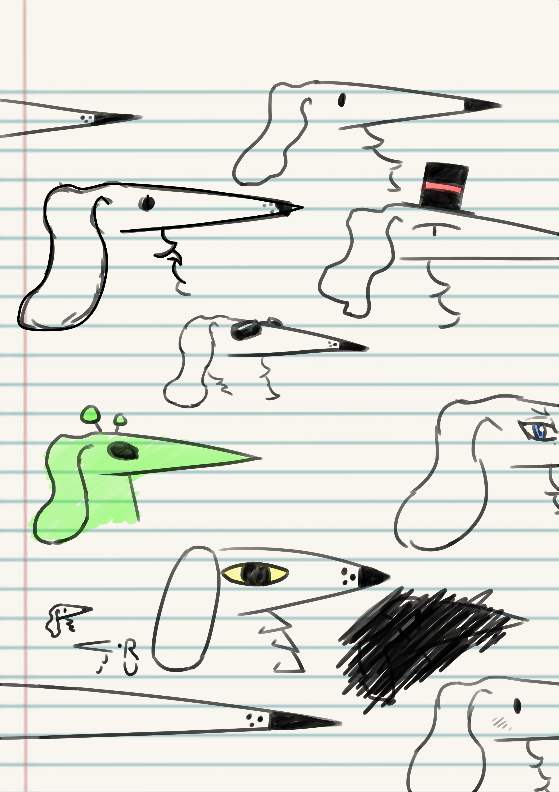
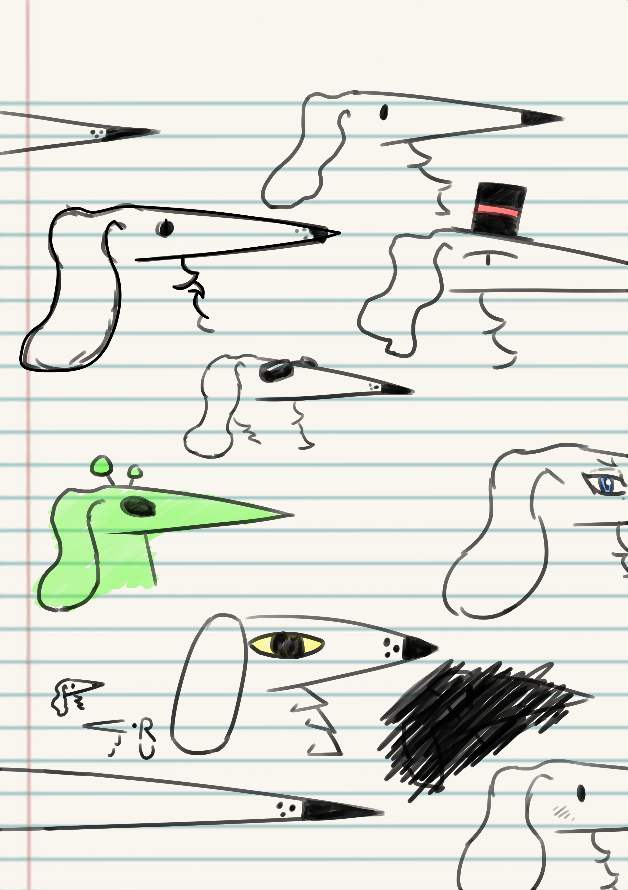

Sites

Verschillende sites die ik heb gemaakt bij CMD. Click op het plaatje om de site te bezoeken.
Quirky RPG Site
Een site over aparte RPG games die ik leuk vindt. Gemaakt voor Internet Standaarden, waar ik de basis van HTML en CSS leerde.
In De Kring

Een site over kringloop winkels. Gemaakt voor een project over De Groene Stad Amsterdam en duurzame initiatieven.
Alien Game
Een simpele Alien Tamagochi-like game waar mee ik het gebruiken van Javascript mee hebt geleerd. Alle Alien sprites zijn getekend door mijzelf.
Character Design
Character design is iets wat mij sterk interesseert. Ook al is het niet echt iets dat ik vaak moet doen voor de projecten van school, is het toch wel iets dat ik heel erg leuk vindt om te doen.
Dit zijn verschillende character designs die ik heb gemaakt voor verschillende projecten:


Een design document die ik gemaakt voor een school opdracht van de designs hierboven.


Pixel Art
Pixel Art die ik heb gemaakt toen ik ICT Game Design deed.


 



De Borzoi
Mijn de facto mascotte die ik gebruik als logo en voor andere dingen; een simpele tekeningen van een lang-snuitige Borzoi.

 

Ik teken dit hondje bijna overal, omdat ik het leuk vindt om te tekenen.
Figma
Paar dingen die ik gemaakt heb in Figma voor school.
Een van de eerste dingen die ik heb moeten maken in Figma om het programma te leren, een ontwerp voor een bibliotheek programma voor scholen in Amsterdam.
De design document die ik voor de opdracht moest maken.
Designs voor een site op verschillende groottes, voor mobiel, tablet en desktop, voor een Vormgeving opdracht.
Een design voor een portfolio app waar in je tekeningen in kan opslaan. Hiervoor had ik een karakter gemaakt die je hierin helpt.
Videos
Videos maken is niet echt iets dat ik per se later wil doen, maar ik vindt het soms wel leuk om het te maken als opdracht voor mijn studie.